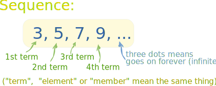
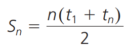
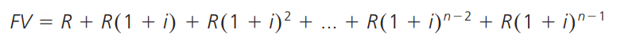

4. Chapters 7-8

This poster will cover:
- Discrete Functions: Sequences and Series (Chapter 7)
- Discrete Functions: Financial Applications (Chapter 8)
Discrete Functions: Sequences and Series (Chapter 7):
In this chapter, you learnt:
- Arithmetic Sequences
- An arithmetic sequence is a sequence that has the same difference, the common difference, between any pair of consecutive terms. New terms are created by adding the previous term by the same value each time.
Terms to Know:
- Sequence: An ordered list of numbers
- Term: A number in a sequence. Subscripts are usually used to identify the positions of the terms.
- Recursive Sequence: A sequence for which one term (or more) is given and each successive term is determined from the previous term(s)

Arithmetic Formulas:
- General Form:
Where tn is the value of the nth term, a is the first term, n is the term number and d is the common difference.
- Recursive Form:
Where t1 is the first term and tn is the value of the nth term, calculated by adding the previous term with the common difference.
- Geometric Sequences
- A geometric sequence is a sequence that has the same ratio, the common ratio, between any pair of consecutive terms. New terms are created by multiplying the previous term by the same value each time.
Geometric Formulas:
- General Form:
Where tn is the value of the nth term, a is the first term, n is the term number and r is the common ratio.
- Recursive Form:
Where t1 is the first term and tn is the value of the nth term, calculated by multiplying the previous term with the common ratio.
- Sum of First n Terms of Arithmetic/Geometric Sequences
Formulas of Sum of First n Terms of a Sequence:
- Arithmetic Sequence:

- Geometric Sequence:
- Pascal’s Triangle/Binomial Expansion
- To draw Pascal’s Triangle, start out with 1 at the top, continuing to place numbers below in a triangular pattern. These numbers are a sum of the 2 numbers directly on top.
Patterns:
- Down the sides are always constant sequences, like in the example below, the constant is 1.
- The diagonals beside the side of the triangle forms an arithmetic sequence (etc. 1, 2, 3, 4, 5).
- Using Pascal’s Triangle, expanding binomials is easy!
Discrete Functions: Financial Applications (Chapter 8):
In this chapter, you learnt:
- Simple Interest
Terms to Know:
- Simple Interest: Interest earned or paid only on the original sum of money that was invested or borrowed. Growth is linear.
- Principal: A sum of money that is borrowed or invested.
- Interest: The money earned from an investment or the cost of borrowing money.
Example of Graphed Simple Interest:
Simple Interest Formula:

- Where I is the interest, P is the principal, r is the interest rate (decimal) and t is time.
Total Amount Earned With Simple Interest Formula:
- Compound Interest: Future Value
- Compound interest is calculated by applying the interest rate to the principal and earned interest. Growth is exponential.
- Future Value: The total amount after a time period is the future value.
Compound Interest Formula:
Where I is the total interest, A is the future value, and P is the initial investment.
Future Value Formula:
Where A is the future value; P is the principal; i is the interest rate per compounding period (decimal); and n is the number of compounding periods.
Here’s a reference chart to make compounding periods easier to understand:
- Compound Interest: Present Value
- Present Value: The principal that would have to be invested now to get a specific future value in a certain amount of time. PV is used for present value instead of P, since P is used for principal.
Present Value Formula:
- Where PV is the present value; A is the total amount, or future value; i is the interest rate per compounding period, expressed as a decimal; and n is the number of compounding periods.
Tip:
- An easy way to tell whether to use future or present value is to understand if you have the lump sum in the present or in the future. If you don’t have the lump sum yet, but you’re trying to get it in the future, i.e trying to save up for a car or saving up for a retirement fund, it’s future value. If you do have the lump sum in the present, i.e paying off a car loan or letting saved up retirement fund generate interest during retirement, it’s present value.
- Future Value Annuities
- The future value of an annuity is the sum of all regular payments and
interest earned.
Visual Representation:
- If you notice, the payments in the first few compounding periods are worth more in the future as they’ve compounded over many more periods than the payments put at the end.
The future value is the sum of all these individual payment, written as:

Where FV is the future value; R is the regular payment; i is the interest rate per compounding period, expressed as a decimal; and n is the number of compounding periods.
This geometric series can be simplified as:
Where FV is the future value; R is the regular payment for each compounding period; i is the interest rate per compounding period, expressed as a decimal; and n is the number of compounding periods.
- Present Value Annuities
- The present value of an annuity is the value of the annuity at the beginning of the term.
Visual Representation:
- If you notice, the payments in the first few compounding periods are worth more presently as they are compounded over less interest than those in the compounding periods at the end.
The present value is the sum of all these individual payments, written as:
Where PV is the present value; R is the regular payment; i is the interest rate per compounding period, expressed as a decimal; and n is the number of compounding periods.
This geometric series can be simplified to:
Where PV is the present value; R is the regular payment each compounding period; i is the interest rate per compounding period, expressed as a decimal; and n is the number of compounding periods.